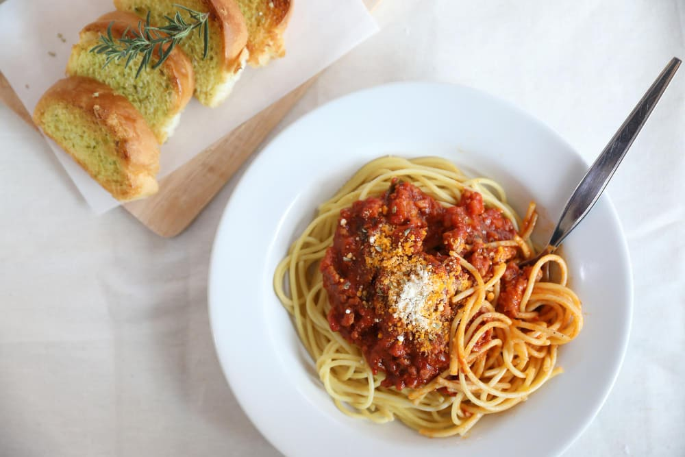

Болоньезе
Это название традиционного итальянского соуса, который готовится на основе томатов и мясного фарша. Один из вариантов подачи – аппетитная паста Болоньезе.

Ингредиенты для 4 персон!
- 300г пасты
- 500г телятины
- головка лука
- морковка
- 3 стебля сельдерея
- 150г консервированных томатов в собственном соку
- 3-4ст.л. оливкового масла
- стакан воды
- 2 чесночных зубчика
- петрушка, молотый черный перец, соль, базилик - по вкусу
Способ приготовления
- Мясо после мытья превратите в фарш на мясорубке.
- Почистите, пошинкуйте лук. Мытую морковку режьте мелким кубиком. Так же нарезайте сельдерей.
- В толстодонном сотейнике прогрейте оливковое масло, на нём все измельчённые овощи обжаривайте на небольшом огне с периодическими помешиваниями около 10 минут.
- Добавляйте к овощам телячий фарш и жарьте его в течение 10-15 минут, активно разбивая лопаткой, чтобы не оставались слипшиеся комки.
- Перетрите вилкой томаты или пюрируйте в блендере, выкладывайте их в сотейник вместе с измельчённым чесноком. Добавляйте соль и приправы. Томите все компоненты блюда 7-10 минут.
- Пока соус на плите, отваривайте пасту, сливайте с неё воду, раскладывайте по тарелкам, а сверху выкладывайте приготовленный горячий Болоньезе.